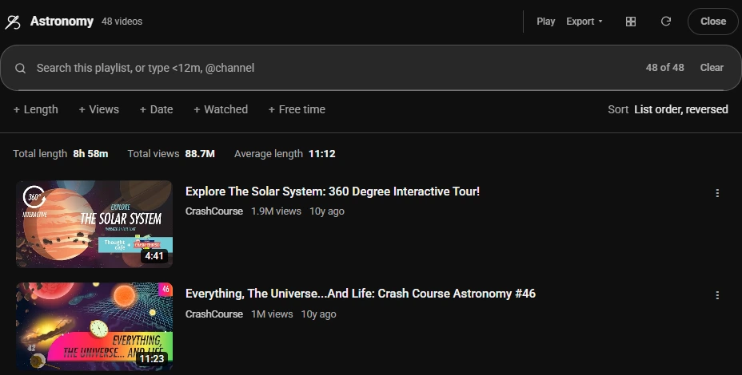
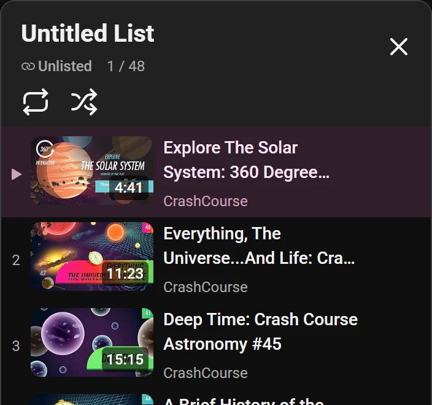

Guide 17·Playlists
How to reverse the order of a YouTube playlist.
Updated 19 November 2026
Short answer
YouTube has no button for it. The playlist player has Loop and Shuffle, and a playlist someone else made can't be sorted at all. On a playlist of your own, the sort menu above the list can turn it round, and Play all then follows the new order. For anyone's playlist, Needle, a free Chrome extension, reads the whole list, sorts it List order, reversed, and Play plays it that way, last video first.
01·On YouTube
What YouTube lets you do
- The player: the playlist panel beside the video has Loop and Shuffle. No reverse.
- Someone else's playlist: its page has Play all and Shuffle and no sort menu, so it plays in the order its owner set.
- Your own playlists and Watch Later: a sort menu, below.
Checked on 18 November 2026, in Chrome on a computer.
02·Your playlists
Your own playlists: the sort menu
On a playlist you made, and on Watch Later, the first chip above the list is a sort menu: Manual, Date added (newest), Date added (oldest), Most popular, Date published (newest) and Date published (oldest).
- Date added turns a list you've been adding to over the years around: oldest one way, newest the other.
- Date published (oldest) starts a series from its first episode, whatever order you saved them in.
Unlike Needle's sort, this one changes the playlist. The order you pick is saved with it, and Play all plays in that order from then on. If you'd arranged it by hand, sorting replaces that arrangement.
03·With Needle
Any playlist, with Needle
- Open the playlist.
- Press the needle button in the bottom right corner, or Alt+Y. Needle reads every video in it.
- Set Sort to List order, reversed. The last video is now at the top.
- Press Play.

Play opens what the panel shows, in that order, as a temporary YouTube playlist:

04·Over 50 videos
Longer than 50 videos
YouTube's quick lists take 50 videos, so Play sends the first 50 the panel shows. For a 200-video playlist turned round, that's the last 50. To carry on from there:
- Watch your way through the first 50.
- Back on the playlist, open the panel and set + Watched to Not finished.
- What you've finished drops out, and Play picks up with the next 50, still in reverse.
It goes by your watch progress, so it needs you signed in to YouTube.
05·Sorting
Other orders
The same Sort menu has Oldest upload and Newest upload, by when each video was posted rather than where it sits in the list, and views, length and title too. Sorting a playlist by date, views or title goes through them. Sorting by length has the shortest and longest first.
Your Liked videos run newest first with no sort at all, and the same reversed order fixes that: liked videos, oldest first. To watch a channel from its first upload, reverse its uploads playlist.
06·Questions
Questions?
Can you reverse a YouTube playlist?
Not someone else's, on YouTube itself: the player has Loop and Shuffle only, and their playlist page has no sort. Your own playlists have a sort menu, and Needle reverses any playlist in its panel and plays it in that order.
How many videos does Needle's Play take?
50 at a time. Play hands the videos to YouTube's own address for a quick list, which takes up to 50, and YouTube plays them as an untitled, unlisted list.
What about a playlist longer than 50?
Play the first 50, then set Watched to Not finished in the panel and press Play again: the ones you've finished drop out and the next 50 come up, still in reverse. It goes by your watch progress, so it needs you signed in.
Does reversing change the playlist?
Needle's doesn't. It changes the order in its panel and in what Play opens, nothing else. YouTube's own sort, on your playlists, does: the new order is saved with the list.
Reverse order, or oldest upload?
List order, reversed is the playlist's own order turned round. Oldest upload goes by when each video was posted, which suits a channel's uploads but not a list someone arranged by hand.
Can I reverse a playlist on my phone?
Not with Needle, which is for YouTube in a desktop browser. A playlist of your own keeps the order you sort it to, though, so sorting it on a computer changes how it plays on your phone too.
Does it work on Watch Later and Liked videos?
Yes. If the panel says First 100 only, press Read all first, so the reversed list starts from the real end.
Is it free?
Yes. No account, no trial, no paid tier.